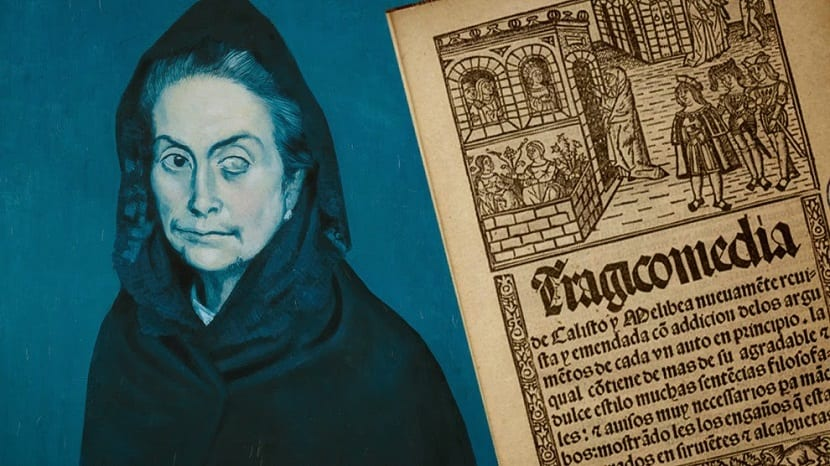

En esta página podrán conocer mas sobre la obra títulada: La Celestina, sus personajes y información sobre el autor.
La Celestina

La novela de La Celestina es reconocida como una tragicomedia, escrita por Fernando de Rojas. La obra fue públicada anónimanete en el 1499, luego al ser completada por Fernando de Rojas se publicó en 1502.
En está página conoceran aspectos importantes e interesantes sobre la novela. Podrán encontar información sobre el autor de la obra, descripción breve de la novela, personajes importantes, vídeos y hasta enlaces a páginas importantes.
Descripción de La Celestina
La Celestina es una historia de amor bastante trágica. Esta trata de los locos enamorados, Calisto y Melibea. Al principio de la novela Calisto es rechazado por Melibea, este se abandona en la melancolía. Calisto sigue el consejo de un criado de él llamado Sempronio, este le dice que busque a Celestina, una bruja. Celestina hace que Melibea se enamore de Calisto, luego estando Calisto con ella muere en una accidente bajando unas escáleras. Melibea del sufrimiento decide suicidarse.